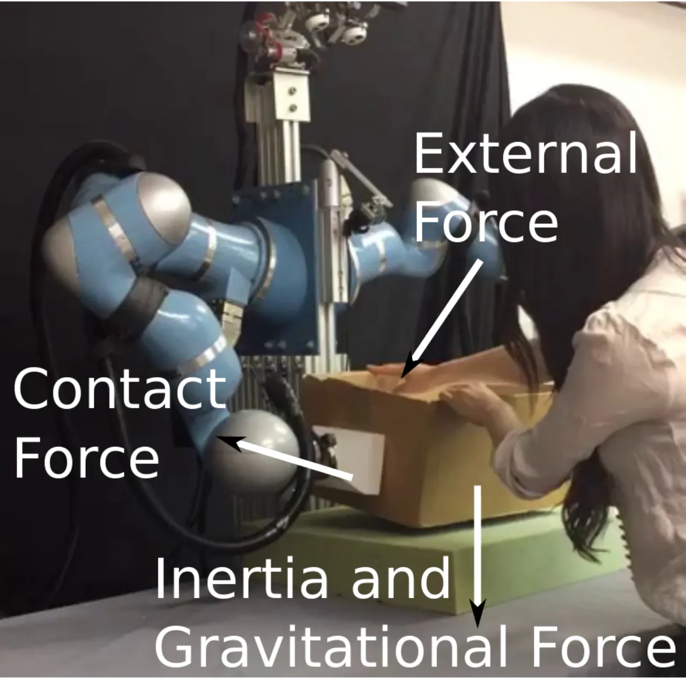
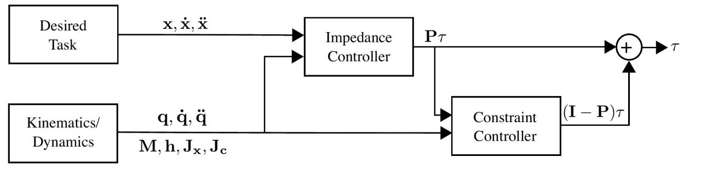
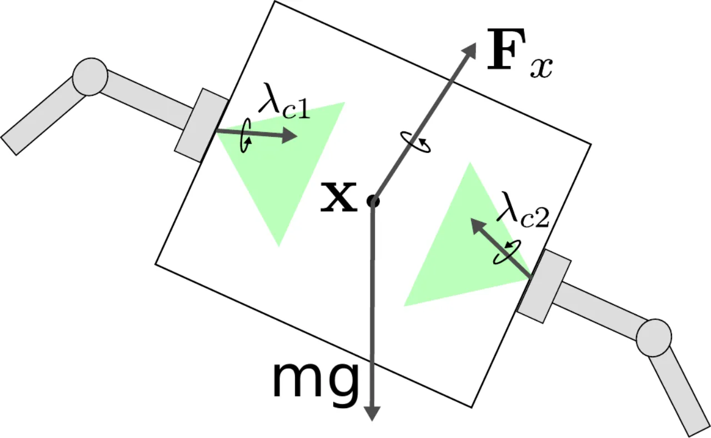
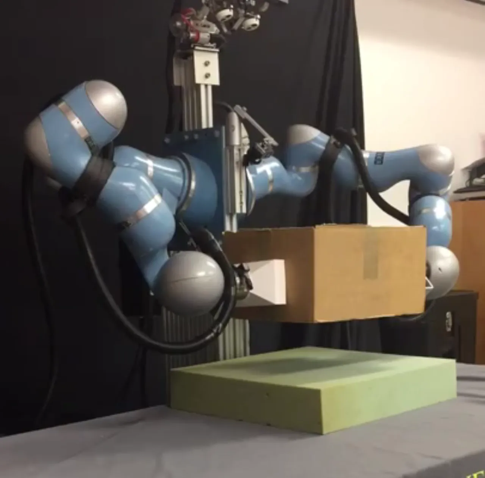
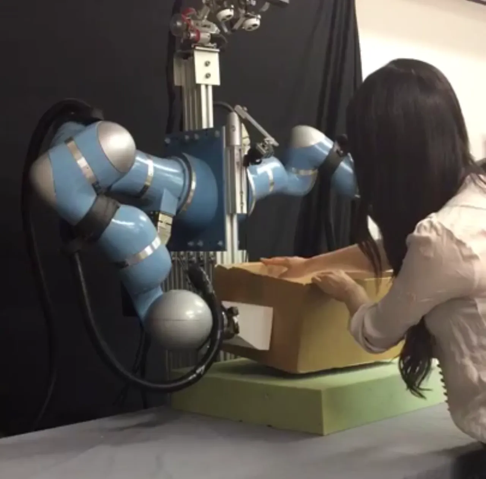
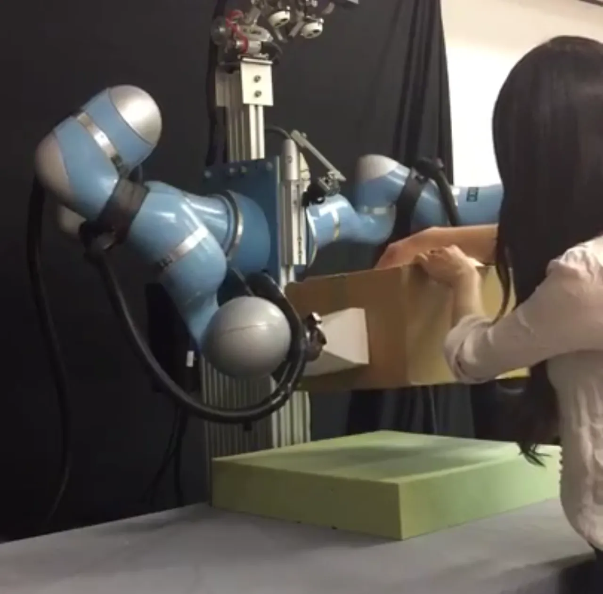
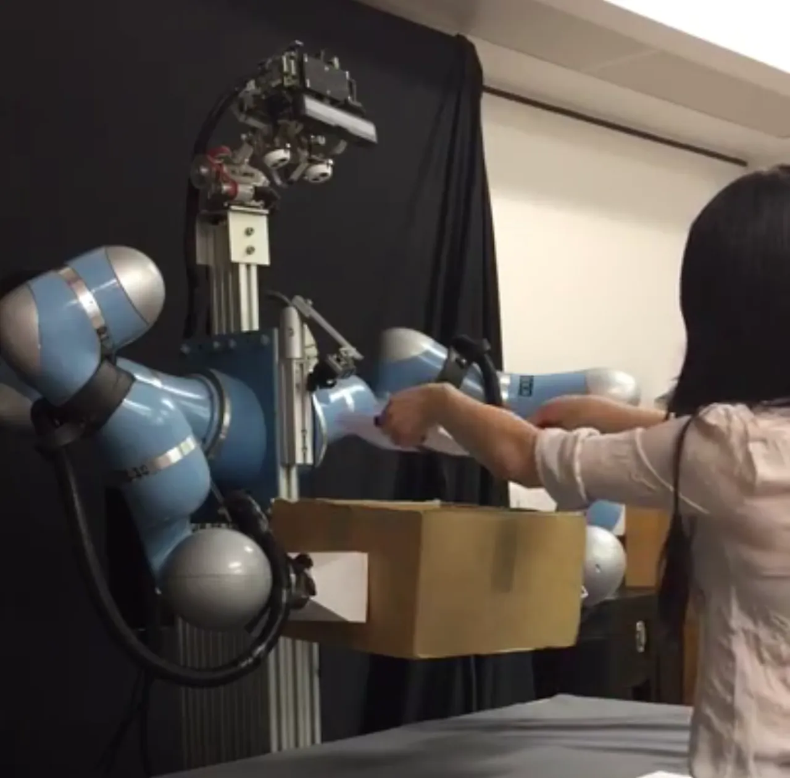
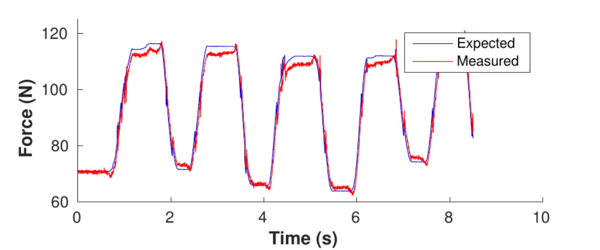
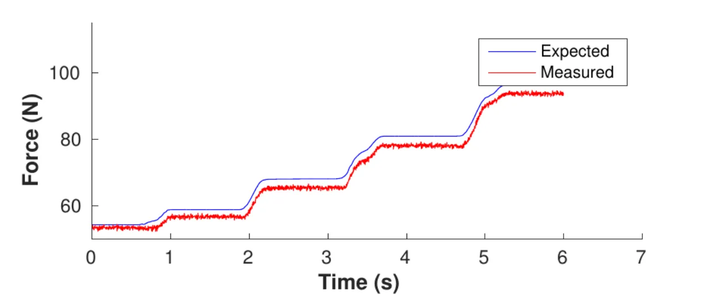

面向刚性物体的双臂协同操作，本文在 projected inverse dynamics 框架下把控制力矩正交分解：非约束（unconstrained） 分量实现物体上的 6-DOF 笛卡尔阻抗行为，约束（constrained） 分量在摩擦锥等约束内以最小力矩维持接触。关键在于——无需在接触点安装力/力矩传感器，外部扰动力可由物体相对期望位姿的位移直接估计。
很多机器人任务都可以描述为：在约束（constraints）下完成一个期望任务，同时应对外部扰动（disturbances）。例如双臂夹持一个刚性盒子或在桌面上滑动它（约束），与此同时人推动物体或往上加未知重量（扰动）。两类力的区分是关键——约束力不产生运动，而扰动力会。控制器必须同时"意识到"两类力，才能既以期望的阻抗响应去抵抗扰动，又只施加维持接触所必需的挤压力。
"The distinction between the two forces is critical as constraint forces do not induce motion, while disturbance forces can. A controller must be aware of contributions from both types of forces in order to achieve its task in an optimal manner."

本文的做法是把问题放进 projected inverse dynamics 框架（源自 Aghili 2005，并沿用 Mistry 2011 把约束纳入操作空间的思路），把单臂"接触刚性环境"的表述扩展到多臂协同操作单一刚体，并在此之上叠加物体处的 6-DOF 笛卡尔阻抗控制与接触力优化。
核心是把约束下的刚体动力学 Mq̈ + h = τ + JcTλc 用正交投影矩阵 P = I − Jc+Jc 拆成两项：Pτ（落在约束 Jacobian 零空间，产生运动/负责任务与阻抗）和 (I−P)τ（负责施加约束/接触力而不产生关节运动）。两项彼此正交，因此任务控制与抓取维持互不干扰。

目标是让操作点 x ∈ SE(3) 在外部扰动 Fx 下呈现期望的二阶阻抗行为 Λdẍ̃ + Ddẋ̃ + Kdx̃ = Fx。把动力学两边乘以 P 消去接触力后，在操作空间得到 F + Fx = hc + Λcẍ。一个关键简化：
"If the desired inertia Λd is identical to the robot inertia Λc, the feedback of the external force Fx can be avoided."
即当放弃惯量整形（inertia shaping）时，控制律简化为 F = hc + Λcẍd − Ddẋ̃ − Kdx̃，无需测量外力即可实现期望阻抗响应。
对多臂夹持单一刚体，约束被设计成只允许内力（internal wrenches）——即作用在 grasp map 零空间、对物体不产生净力矩的手爪力。基于 analytical dynamics（Udwadia 2001）与 Hirche 2015 的结论，内力与约束力具有同一性质（对任意虚位移不做虚功）。定义第 i 只手的 grasp matrix Gi，双臂系统 G = [GL GR] ∈ ℝ6×12；用零空间投影 I − G+G 构造约束 Jacobian，使 Gλc = 0，从而只贡献内力、对物体无净 wrench。
维持接触需应对作用在物体上的未知力/力矩（机器人运动惯性、重力等）。手爪施加的接触 wrench 必须满足三类约束（z 轴取接触面法向）：

"最优接触力"= 在满足上述三类约束、并平衡所有外力的前提下，维持全部接触所需的最小力矩。若接触位置固定，这是关于接触 wrench 的凸优化问题。作者把它重写为关于命令 wrench λu 的形式 min λuTJcJcTλu，其中所需的外部扰动 Fx 由阻抗关系式（物体相对期望位姿的位移）估计得到——无需直接测量接触力。二次的摩擦锥用 8 条边的线性化摩擦锥近似，最终在实时控制回路内以 GUROBI（带线性约束的 QP）求解。
全部实验在 dual KUKA LWR 平台 "Boris" 上完成。虽然末端装有力/力矩传感器，但它们仅用于记录、不进入控制器。共三组实验：单臂桌面擦拭（概念验证）、双臂静态夹持（抗扰动）、双臂轨迹跟踪（带人为干扰）。
单臂末端与刚性平面接触，约束施加在竖直位置 z 与两个滚转方向 x、y 上（Jc ∈ ℝ3×7）。任务是在 x,y 平面沿圆形轨迹运动、并维持法向姿态。观察到：命令力随机器人构型变化——当手爪沿较短边加速时更易打滚（δy < δx），因此机器人会推得更用力。与力/力矩传感器读数对比（sanity check），期望接触力与实测接触力高度吻合。




盒子尺寸约 20cm×30cm×40cm（控制器已知），重 700 克（控制器未知）。机器人先静态夹持，人把盒子下推约 40cm 停留数秒再松开；随后每次加 500 克配重，直到累计 2500 克。


大部分力来自两个末端相互挤压。静态时双臂各以约 70 N 挤压盒子；当人向下推时，为防止盒子滑落，挤压力升到约 110 N。
"Note that the robot does not need to measure the external forces in order to know to push harder. The external force is estimated using the displacement of the box relative to its desired position."
机器人让盒子在 y,z 平面沿圆形轨迹周期运动，期间人试图抓住盒子打断轨迹。跟踪结果显示：人在中段抓住盒子时 y、z 两轴都出现大偏差，一旦松手机器人即恢复跟踪圆形轨迹。所需力也随运动方向变化——向下运动（顺重力）时维持抓取所需的力更小。一个诚实的观察：由于盒子质量对控制器未知、不补偿其重力，真实位置始终略低于期望位置。
"the manipulated object is always assumed to be massless. As a consequence, any inertial or gravity forces due to mass of the object are treated as external disturbances by the impedance controller." 作者计划在未来工作中引入对物体质量/惯量的估计，以便在操作中加以补偿。
无需测量外力这一优点，是以令期望惯量 Λd = 机器人惯量 Λc 为代价换来的（放弃了任意塑造末端惯量的自由度）。作者表示未来计划加入 F/T 接触传感器，以在阻抗控制器中实现 inertia shaping。
轨迹实验中"box positions are consistently lower than desired"——因为物体质量对控制器未知、未补偿重力，真实位置始终低于期望位置。
方法假设力闭合抓取、接触位置固定、接触面/接触斑足够大以产生摩擦力与摩擦力矩，并已知摩擦系数 μ、γ 等参数；二次摩擦锥用 8 边线性化近似，且每个控制周期需在实时回路内求解 GUROBI QP。评估仅在单一 dual KUKA LWR 平台上进行，未做跨平台或大规模定量基准对比。